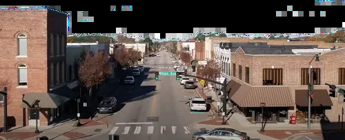
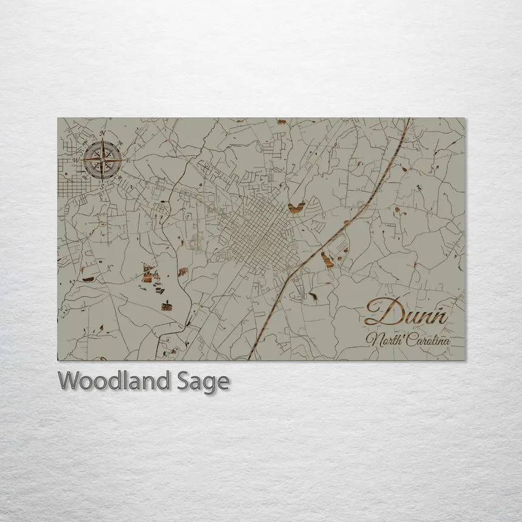

Dunn, North Carolina, USA

History
Located in Harnett County and incorporated in 1887, Dunn was originally known as "Lucknow" and renamed in honor of engineer Bennett R. Dunn, who helped establish the rail line through the area.
The town flourished thanks to the railroad and tobacco industries.
Its heritage is preserved by attractions like the General William C. Lee Airborne Museum, which honors a key military figure from Dunn.
Dunn's charm today lies in its close-knit community, historic downtown, and strong civic pride.
Location

Things to Do in Dunn
- Catch a live show at the Bird’s Nest Listening Room — featuring folk, Americana, and Southern Rock artists.
- Have fun at Carolina Skate Land — roller skating, games, and snacks for family entertainment.
- Visit Stewart Theatre — a renovated theater hosting plays, live music, and classic films.
- Stroll downtown for charming shops, cafes, and period architecture — capturing that “Southern hospitality” feel.
Check out Dunn
What Dunn has to offer